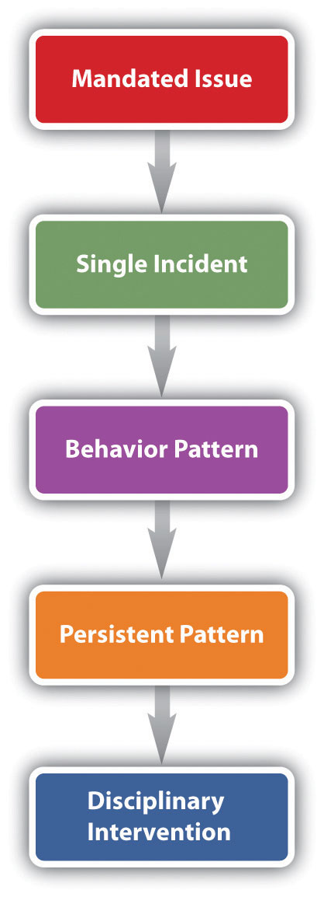
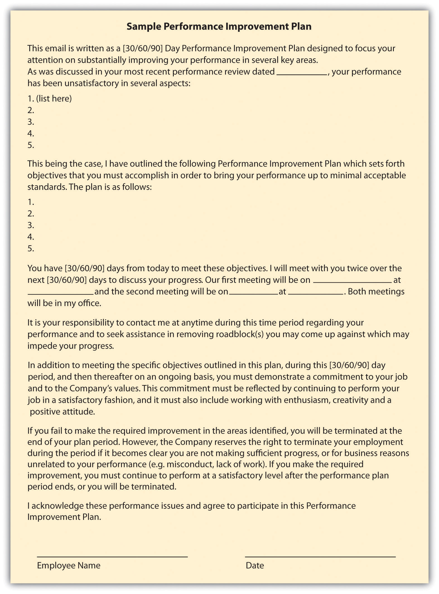
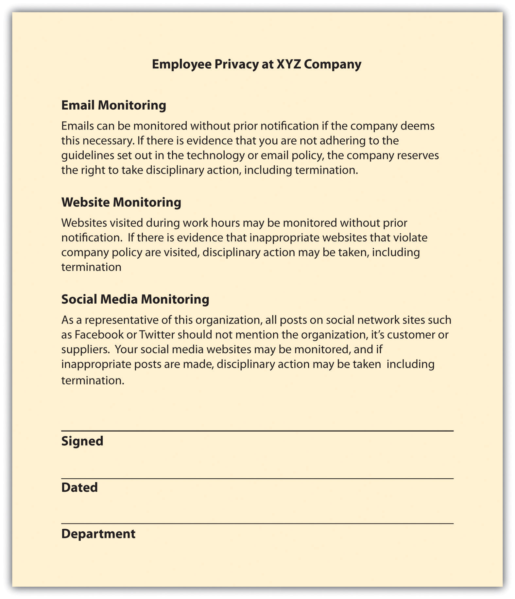

You have been the store manager for a large coffee shop for three years but have never had this type of problem employee to handle before, and you schedule a meeting to speak with your HR manager about it. Jake, one of your best employees, has recently begun to have some problems. He is showing up to work late at least twice per week, and he missed the mandatory employee meeting on Saturday morning. When you ask him about it, he says that he is having some personal problems and will try to get better.
For a bit of time, Jake does get better, comes to work on time, and is his normal, pleasant self when helping customers. However, the situation gets more serious two weeks later when Jake comes to work smelling of alcohol and wearing the same clothes he wore to work the day before. You overhear some of the employees talking about Jake’s drinking problem. You pull Jake aside and ask him what is happening. He says his wife kicked him out of the house last night and he stayed with a friend, but he didn’t have time to gather any of his belongings when he left his house. You accept his answer and hope that things will get better.
A week later, when Jake arrives for his 10–7 shift, he is obviously drunk. He is talking and laughing loudly, smells of alcohol, and has a hard time standing up. You pull him aside and decide to have a serious talk with him. You confront him about his drinking problem, but he denies it, saying he isn’t drunk, just tired from everything happening with his wife. You point out the smell and the inability to stand up, and Jake starts crying and says he quit drinking ten years ago but has recently started again with his impending divorce. He begs for you to give him another chance and promises to stop drinking. You tell him you will think about it, but in the meantime, you send him home.
The meeting with HR is this afternoon and you feel nervous. You want to do what is right for Jake, but you also know this kind of disruptive behavior can’t continue. You like Jake as a person and he is normally a good employee, so you don’t want to fire him. When you meet with the HR manager, he discusses your options. The options, he says, are based on a discipline process developed by HR, and the process helps to ensure that the firing of an employee is both legal and fair. As you review the process, you realize that ignoring the behavior early on has an effect on what you can do now. Since you didn’t warn Jake earlier, you must formally document his behavior before you can make any decision to let him go. You hope that Jake can improve so it doesn’t come down to that.
The author introduces the chapter on employee performance.
As you know from reading this book so far, the time and money investment in a new employee is overwhelming. The cost to select, hire, and train a new employee is staggering. But what if that new employee isn’t working out? This next section will provide some examples of performance issues and examples of processes to handle these types of employee problems.
One of the most difficult parts of managing others isn’t when they are doing a great job—it is when they aren’t doing a good job. In this section, we will address some examples of performance issues and how to handle them.
While certainly not exhaustive, this list provides some insight into the types of problems that may be experienced. As you can see, some of these problems are more serious than others. Some issues may only require a warning, while some may require immediate dismissal. As an HR professional, it is your job to develop policies and procedures for dealing with such problems. Let’s discuss these next.
To handle attendance problems at many organizations, a no-fault attendance plan is put into place. In this type of plan, employees are allowed a certain number of absences; when they exceed that number, a progressive discipline process begins and might result in dismissal of the employee. A no-fault attendance policy means there are no excused or unexcused absences, and all absences count against an employee. For example, a company might give one point for an absence that is called in the night before work, a half point for a tardy, and two points for a no-call and no-show absence. When an employee reaches a certain number determined by the company, he or she is disciplined. This type of policy is advantageous in industries in which unplanned absences have a direct effect on productivity, such as manufacturing and production. Another advantage is that managers do not need to make judgment calls on what is an excused versus an unexcused absence, and this can result in fairness to all employees.
One such company with a no-fault attendance policy is Verizon Communications. However, the Equal Employment Opportunity Commission (EEOC) investigated this policy and announced that Verizon will pay $20 million to resolve a disability discrimination lawsuit.Jim Evans, “EEOC Finds Fault with Company’s No Fault Attendance Plan,” Zanesville Times, July 17, 2011, accessed August 1, 2011, http://www.businessmanagementdaily.com/19860/eeoc-finds-fault-with-no-fault-attendance-policies. The lawsuit said that the company, through use of the no-fault attendance policy, denied reasonable accommodations required by the Americans with Disabilities Act (ADA). As a result, hundreds of Verizon employees were disciplined or fired. In this case, the EEOC cites paid or unpaid leave as one way for an employer to provide reasonable accommodations for an employee with a disability. The policy specified there would be no exceptions made to the no-fault attendance policy to accommodate employees with ADA disabilities. When discussing the case, the EEOC chair justified the agency’s position by saying, “Flexibility on leave can enable a worker with a disability to remain employed and productive, a win for the worker, employer, and the economy. By contrast, an inflexible leave policy may deny workers with disabilities a reasonable accommodation.”Jim Evans, “EEOC Finds Fault with Company’s No Fault Attendance Plan,” Zanesville Times, July 17, 2011, accessed August 1, 2011, http://www.businessmanagementdaily.com/19860/eeoc-finds-fault-with-no-fault-attendance-policies. Part of the settlement also involved additional training to Verizon employees on ADA and how to administer the attendance plan. This successful lawsuit shows that even the most seemingly clear performance expectations must be flexible to meet legal obligations.
What would you do if you saw a coworker taking a box of pens home from the office?
When an employee isn’t performing as expected, it can be very disapointing. When you consider the amount of time it takes to recruit, hire, and train someone, it can be disappointing to find that a person has performance issues. Sometimes performance issues can be related to something personal, such as drug or alchol abuse, but often it is a combination of factors. Some of these factors can be internal while others may be external. Internal factors may include the following:
Some of the external factors may include the following:
All the internal reasons speak to the importance once again of hiring the right person to begin with. The external reasons may be something that can be easily addressed and fixed. Whether the reason is internal or external, performance issues must be handled in a timely manner. This is addressed in Section 10.1.3 "Defining Discipline". We discuss performance issues in greater detail in Chapter 11 "Employee Assessment".
If an employee is not meeting the expectations, discipline might need to occur. DisciplineThe process that corrects undesirable behavior. is defined as the process that corrects undesirable behavior. The goal of a discipline process shouldn’t necessarily be to punish, but to help the employee meet performance expectations. Often supervisors choose not to apply discipline procedures because they have not documented past employee actions or did not want to take the time to handle the situation. When this occurs, the organization lacks consistency among managers, possibility resulting in motivational issues for other employees and loss of productivity.
To have an effective discipline process, rules and policies need to be in place and communicated so all employees know the expectations. Here are some guidelines on creation of rules and organizational policies:
Of course, there is a balance between too many “rules” and giving employees freedom to do their work. However, the point of written rules is to maintain consistency. Suppose, for example, you have a manager in operations and a manager in marketing. They both lead with a different style; the operations manager has a more rigid management style, while the marketing manager uses more of a laissez-faire approach. Suppose one employee in each of the areas is constantly late to work. The marketing manager may not do anything about it, while the operations manager may decide each tardy day merits a “write-up,” and after three write-ups, the employee is let go. See how lack of consistency might be a problem? If this employee is let go, he or she might be able to successfully file a lawsuit for wrongful termination, since another employee with the same performance issue was not let go. Wrongful terminationWhen an employer has fired or laid off an employee for illegal reasons, such as violation of antidiscrimination laws or violation of oral and/or written employee agreements. means an employer has fired or laid off an employee for illegal reasons, such as violation of antidiscrimination laws or violation of oral and/or written employee agreements. To avoid such situations, a consistent approach to managing employee performance is a crucial part of the human resources job.
Besides the written rules, each individual job analysis should have rules and policies that apply to that specific job. We discuss performance appraisal in further detail in Chapter 11 "Employee Assessment", but it is worth a mention here as well. The performance appraisal is a systematic process to evaluate employees on (at least) an annual basis. The organization’s performance appraisal and general rules and policies should be the tools that measure the employee’s overall performance. If an employee breaks the rules or does not meet expectations of the performance appraisal, the performance issue model, which we will discuss next, can be used to correct the behavior.
Because of the many varieties of performance issues, we will not discuss how to handle each type in detail here. Instead, we present a model that can be used to develop policies around performance, for fairness and consistency.
We can view performance issues in one of five areas. First, the mandated issue is serious and must be addressed immediately. Usually, the mandated issue is one that goes beyond the company and could be a law. Examples of mandated issues might include an employee sharing information that violates privacy laws, not following safety procedures, or engaging in sexual harassment. For example, let’s say a hospital employee posts something on his Facebook page that violates patient privacy. This would be considered a mandated issue (to not violate privacy laws) and could put the hospital in serious trouble. These types of issues need to be handled swiftly. A written policy detailing how this type of issue would be handled is crucial. In our example above, the policy may state that the employee is immediately fired for this type of violation. Or, it may mean this employee is required to go through privacy training again and is given a written warning. Whatever the result, developing a policy on how mandated issues will be handled is important for consistency.
The second performance issue can be called a single incident. Perhaps the employee misspeaks and insults some colleagues or perhaps he or she was over budget or late on a project. These types of incidents are usually best solved with a casual conversation to let the employee know what he or she did wasn’t appropriate. Consider this type of misstep a development opportunity for your employee. Coaching and working with the employee on this issue can be the best way to nip this problem before it gets worse.
Figure 10.1 The Process for Handling Performance Issues
Often when single incidents are not immediately corrected, they can evolve into a behavior pattern, which is our third type of performance issue. This can occur when the employee doesn’t think the incident is a big deal because he hasn’t been correct before or may not even realize his is doing something wrong. In this case, it’s important to talk with the employee and let him know what is expected.
If the employee has been corrected for a behavior pattern but continues to exhibit the same behavior, we call this a persistent pattern. Often you see employees correct the problem after an initial discussion but then fall back into old habits. If they do not self-correct, it could be they do not have the training or the skills to perform the job. In this phase of handling performance issues, it is important to let the employee know that the problem is serious and further action will be taken if it continues. If you believe the employee just doesn’t have the skills or knowledge to perform the job, asking him or her about this could be helpful to getting to the root of the problem as well. If the employee continues to be nonperforming, you may consider utilizing the progressive discipline process before initiating an employee separation. However, investigating the performance issue should occur before implementing any sort of discipline.
When an employee is having a performance issue, often it is our responsibility as HR professionals to investigate the situation. Training managers on how to document performance failings is the first step in this process. Proper documentation is necessary should the employee need to be terminated later for the performance issue. The documentation should include the following information:
With this proper documentation, the employee and the manager will clearly know the next steps that will be taken should the employee commit the infraction in the future. Once the issue has been documented, the manager and employee should meet about the infraction. This type of meeting is called an investigative interviewWhen a discipline procedure takes place, the interview with the employee is used to make sure the employee is fully aware of the discipline issue and allows the employee the opportunity to explain his or her side of the story. and is used to make sure the employee is fully aware of the discipline issue. This also allows the employee the opportunity to explain his or her side of the story. These types of meetings should always be conducted in private, never in the presence of other employees.
In unionized organizations, however, the employee is entitled to union representation at the investigative interview. This union representation is normally called interest based bargainingA type of bargaining, mutual interests are brought up and discussed, rather than each party coming to the table with a list of demands.National Labor Relations Board website, “Administrative Law Judge Orders San Juan Company to Respect Employee Weingarten Rights,” March 28, 2011, accessed August 17, 2011. referring to a National Labor Relations Board case that went to the United States Supreme Court in 1975. Recently, Weingarten rights continued to be protected when Alonso and Carus Ironworks was ordered to cease and desist from threatening union representatives who attempted to represent an employee during an investigative interview.National Labor Relations Board website, “Administrative Law Judge Orders San Juan Company to Respect Employee Weingarten Rights,” March 28, 2011, accessed August 17, 2011.
Our last phase of dealing with employee problems would be a disciplinary intervention. Often this is called the progressive discipline processRefers to a series of steps taking corrective action on nonperformance issues.. It refers to a series of steps taking corrective action on nonperformance issues. The progressive discipline process is useful if the offense is not serious and does not demand immediate dismissal, such as employee theft. The progressive discipline process should be documented and applied to all employees committing the same offenses. The steps in progressive discipline normally are the following:
The chart below shows the typical progressive discipline process at the University of Iowa:
The Seven Tests of Just Cause
The seven test[s] of just cause represent a practical and effective way to determine whether a proposed disciplinary action is firmly and fairly grounded. It is fair to assume that these tests will be applied by arbitrators in the event that disciplinary actions are challenged, and it is therefore good practice to apply them prospectively when considering the imposition of progressive discipline.
Seven tests:
Notice
Establish through:
New employee orientation
Reasonable Rules and Orders
Investigation
Must be timely:
Fair Investigation
Proof
Equal Treatment
Equal treatment must be balanced against just application:
Penalty
Source: Reprinted from the University of Iowa’s Office of the Vice President for Research, http://research.uiowa.edu/pimgr/?get=discipline and http://research.uiowa.edu/pimgr/?get=7steps (accessed September 15, 2011).
Another option for handling continued infractions is to consider putting the employee on an improvement plan, which outlines the expectations and steps the employee should take to improve performance. We address this in greater detail in Chapter 11 "Employee Assessment". The plan is detailed and outlined and ensures both parties understand the specific expectations for improvement. If the improvement plan does not work, a progressive discipline process might be used.
Figure 10.2 Sample of a Performance Improvement Plan
Whichever direction is taken with disciplining of the employee, documentation is key throughout the process to avoid wrongful termination issues.
Another option in handling disputes, performance issues, and terminations is alternative dispute resolution (ADR)A third-party resolution method used in conflict with the goal to obtain a resolution that works for the two parties involved.. This method can be effective in getting two parties to come to a resolution. In ADR, an unbiased third party looks at the facts in the case and tries to help the parties come to an agreement. In mediationA type of ADR in which the third party facilitates the resolution process, but the results of the process are not binding for either party., the third party facilitates the resolution process, but the results of the process are not binding for either party. This is different from arbitrationA type of ADR in which a third party reviews the case and imposes a resolution., in which a person reviews the case and makes a resolution or a decision on the situation. The benefits of ADR are lower cost and flexibility, as opposed to taking the issue to court. We discuss these types of systems in greater detail in Chapter 12 "Working with Labor Unions".
Some organizations use a step-review systemA system in which a performance issue is reviewed by consecutively higher levels of management, should there be disagreement by the employee in a discipline procedure.. In this type of system, the performance issue is reviewed by consecutively higher levels of management, should there be disagreement by the employee in a discipline procedure. Some organizations also implement a peer resolution systemA system in which a committee of management and employees is formed to review employee complaints or discipline issues.. In this type of system, a committee of management and employees is formed to review employee complaints or discipline issues. In this situation, the peer review system normally involves the peer group reviewing the documentation and rendering a decision. Another type of ADR is called the ombudsman systemA system in which a person is selected (or elected) to be the designated individual for employees to go to should they have a complaint or an issue with a discipline procedure.. In this system, a person is selected (or elected) to be the designated individual for employees to go to should they have a complaint or an issue with a discipline procedure. In this situation, the ombudsman utilizes problem-solving approaches to resolve the issue. For example, at National Geographic Traveler Magazine an ombudsman handles employee complaints and issues and also customer complaints about travel companies.
This longer video shows an example of dispute mediation between two employees.
Employee separation can occur in any of these scenarios. First, the employee resigns and decides to leave the organization. Second, the employee is terminated for one or more of the performance issues listed previously. Lastly, abscondingWhen an employee decides to leave the organization without resigning and following the normal process. is when the employee decides to leave the organization without resigning and following the normal process. For example, if an employee simply stops showing up to work without notifying anyone of his or her departure, this would be considered absconding. Let’s discuss each of these in detail. Employee separation costs can be expensive, as we learned in Chapter 7 "Retention and Motivation". In the second quarter in 2011, for example, Halliburton reported $8 million in employee separation costs.Brad Lemaire, “Halliburton Posts 54% Q2 Growth,” Proactive Investors, July 18, 2011, accessed August 1, 2011, http://www.proactiveinvestors.com/companies/news/16404/halliburton-posts-54-q2-profit-growth-16404.html.
This video shows the progressive discipline process and the termination of an employee when he continually failed to meet expectations.
ResignationWhen an employee chooses to leave the organization. means the employee chooses to leave the organization. First, if an employee resigns, normally he or she will provide the manager with a formal resignation e-mail. Then the HR professional usually schedules an exit interview, which can consist of an informal confidential discussion as to why the employee is leaving the organization. If HR thinks the issue or reasons for leaving can be fixed, he or she may discuss with the manager if the resignation will be accepted. Assuming the resignation is accepted, the employee will work with the manager to determine a plan for his or her workload. Some managers may prefer the employee leave right away and will redistribute the workload. For some jobs, it may make sense for the employee to finish the current project and then depart. This will vary from job to job, but two weeks’ notice is normally the standard time for resignations.
If it is determined an employee should be terminated, different steps would be taken than in a resignation. First, documentation is necessary, which should have occurred in the progressive discipline process. Performance appraisals, performance improvement plans, and any other performance warnings the employee received should be readily available before meeting with the employee. It should be noted that the reliability and validity of performance appraisals should be checked before dismissing an employee based upon them. Questionable performance appraisals come from the real-world conditions common to rating situations, particularly because of limitations in the abilities of the raters.Jeff Weekley, Academy of Management Journal 32, no. 1 (1989): 213–22. Reliability and validity of performance appraisals are discussed in detail in Chapter 11 "Employee Assessment".
Remember that if the discipline process is followed as outlined prior, a termination for nonperformance should never be a surprise to an employee. Normally, the manager and HR manager would meet with the employee to deliver the news. It should be delivered with compassion but be direct and to the point. Depending on previous contracts, the employee may be entitled to a severance package. A severance packageIncludes pay, benefits, or other compensation to which employees are entitled upon leavingthe organization. can include pay, benefits, or other compensation for which an employee is entitled when they leave the organization. The purpose of a severance plan is to assist the employee while he or she seeks other employment. The HR professional normally develops this type of package in conjunction with the manager. Some considerations in developing a severance package (preferably before anyone is terminated) might include the following:
The last topic that we should discuss in this section is the case of an absconded employee. If an employee stops showing up to work, a good effort to contact this person should be the first priority. If after three days this person has not been reachable and has not contacted the company, it would be prudent to stop pay and seek legal help to recover any company items he or she has, such as laptops or parking passes.
Sometimes rather than dealing with individual performance issues and/or terminations, we find ourselves having to perform layoffs of several to hundreds of employees. Let’s address your role in this process next.
RightsizingRefers to the process of reducing the total size of employees, to ultimately save on costs. refers to the process of reducing the total size of employees, to ultimately save on costs. Downsizing ultimately means the same thing as rightsizing, but the usage of the word has changed in that rightsizing seems to define the organization’s goals better, which would be to reduce staff to save money, or rightsize. When a company decides to rightsize and, ultimately, engage in layoffs, some aspects should be considered.
First, is the downturn temporary? There is nothing worse than laying people off, only to find that as business increases, you need to hire again. Second, has the organization looked at other ways to cut expenses? Perhaps cutting expenses in other areas would be advisable before choosing to lay people off. Finally, consideration should be given to offering temporary sabbaticals, voluntary retirement, or changing from a full- to part-time position. Some employees may even be willing to take a temporary pay cut to reduce costs. Organizations find they can still keep good people by looking at some alternatives that may work for the employee and the organization, even on a temporary basis.
If the company has decided the only way to reduce costs is to cut full-time employees, this is often where HR should be directly involved to ensure legal and ethical guidelines are met. Articulating the reasons for layoffs and establishing a formalized approach to layoffs is the first consideration. Before it is decided who should get cut, criteria should be developed on how these decisions will be made. Similar to how selection criteria might be developed, the development of criteria that determines which jobs will be cut makes the process of cutting more fair, albeit still difficult. Establishing the criteria ahead of time can also help avoid managers’ trying to “save” certain people from their own departments. After development of criteria, the next phase would be to sit down with management and decide who does or doesn’t meet the criteria and who will be laid off. At this point, before the layoffs happen, it makes sense to discuss severance packages. Usually, when an employee signs for a severance package, the employee should also sign a form (the legal department can help with this) that releases the organization from all future claims made by the employee.
After criteria have been developed, people selected, and severance packages determined, it’s key to have a solid communication plan as to how the layoffs will be announced. Usually, this involve an initial e-mail to all employees, letting them know of impending layoffs. Speak with each employee separately, then announce which positions were eliminated. The important thing to remember during layoffs is keeping your employees’ dignity; they did not do anything wrong to lose their job—it was just a result of circumstances.
We know that communicating a layoff announcement is important. This video, starring Kermit the Frog, is a good example of how not to announce layoffs—even on Sesame Street.
Employee rights is defined as the ability to receive fair treatment from employers. This section will discuss employee rights surrounding job protection, privacy, and unionization.
If HR doesn’t understand or properly manage employee rights, lawsuits are sure to follow. It is the HR professional’s job to understand and protect the rights of employees. In the United States, the employment-at-will principle (EAW)The right of an employer to fire an employee or an employee to leave an organization at any time, without any specific cause. is the right of an employer to fire an employee or an employee to leave an organization at any time, without any specific cause. The EAW principle gives both the employee and employer freedom to terminate the relationship at any time. There are three main exceptions to this principle, and whether they are accepted is up to the various states:
Table 10.1 State’s Acceptance of Employment-at-Will Exceptions
| State | Public-Policy Exception | Implied-Contract Exception | Good Faith and Fair Dealing Exception |
|---|---|---|---|
| Alabama | no | yes | yes |
| Alaska | yes | yes | yes |
| Arizona | yes | yes | yes |
| Arkansas | yes | yes | no |
| California | yes | yes | yes |
| Colorado | yes | yes | no |
| Connecticut | yes | yes | no |
| Delaware | yes | no | yes |
| District of Columbia | yes | yes | no |
| Florida | no | no | no |
| Georgia | no | no | no |
| Hawaii | yes | yes | no |
| Idaho | yes | yes | yes |
| Illinois | yes | yes | no |
| Indiana | yes | no | no |
| Iowa | yes | yes | no |
| Kansas | yes | yes | no |
| Kentucky | yes | yes | no |
| Louisiana | no | no | no |
| Maine | no | yes | no |
| Maryland | yes | yes | no |
| Massachusetts | yes | no | yes |
| Michigan | yes | yes | no |
| Minnesota | yes | yes | no |
| Mississippi | yes | yes | no |
| Missouri | yes | no | no |
| Montana | yes | no | no |
| Nebraska | no | yes | no |
| Nevada | yes | yes | yes |
| New Hampshire | yes | yes | no |
| New Jersey | yes | yes | no |
| New Mexico | yes | yes | no |
| New York | no | yes | no |
| North Carolina | yes | no | no |
| North Dakota | yes | yes | no |
| Ohio | yes | yes | no |
| Oklahoma | yes | yes | no |
| Oregon | yes | yes | no |
| Pennsylvania | yes | no | no |
| Rhode Island | no | no | no |
| South Carolina | yes | yes | No |
| South Dakota | yes | yes | no |
| Tennessee | yes | yes | no |
| Texas | yes | no | no |
| Utah | yes | yes | yes |
| Vermont | yes | yes | no |
| Virginia | yes | no | no |
| Washington | yes | yes | no |
| West Virginia | yes | yes | no |
| Wisconsin | yes | yes | no |
| Wyoming | yes | yes | yes |
| Bold text indicates a state with all three exceptions. | |||
| Italic text indicates a state with none of the three exceptions. | |||
When one of the exceptions can be proven, wrongful dischargeDischarge as a result of discrimination, an implied contract between the employee and employer, violation of public policy, or lack of good faith if there is a lack of good faith and fair dealing in the firing. accusations may occur. The United States is one of the few major industrial powers that utilize an employment-at-will philosophy. Most countries, including France and the UK, require employers to show just cause for termination of a person’s employment.USLegal, “Employment at Will,” accessed March 15, 2011, http://employment.uslegal.com/employment-at-will/. The advantage of employment at will allows for freedom of employment; the possibility of wrongful discharge tells us that we must be prepared to defend the termination of an employee, as to not be charged with a wrongful discharge case.
Employees also have job protection if they engage in whistleblowing. WhistleblowingThe practice of an employee’s telling the public about ethical or legal violations of his or her organization. refers to an employee’s telling the public about ethical or legal violations of his or her organization. This protection was granted in 1989 and extended through the Sarbanes-Oxley Act of 2002. Many organizations create whistleblowing policies and a mechanism to report illegal or unethical practices within the organization.Lilanthi Ravishankar, “Encouraging Internal Whistle Blowing,” Santa Clara University, accessed March 15, 2011, http://www.scu.edu/ethics/publications/submitted/whistleblowing.html.
Another consideration for employee job protection is that of an implied contract. It is in the best interest of HR professionals and managers alike to avoid implying an employee has a contract with the organization. In fact, many organizations develop employment-at-will policies and ask their employees to sign these policies as a disclaimer for the organization.
A constructive dischargeThe resignation of an employee due to work conditions so intolerable that he or she had no choice. means the employee resigned, but only because the work conditions were so intolerable that he or she had no choice. For example, if James is being sexually harassed at work, and it is so bad he quits, he would need to prove not only the sexual harassment but that it was so bad it required him to quit. This type of situation is important to note; should James’s case go to court and sexual harassment and constructive discharge are found, James may be entitled to back pay and other compensation.
The Worker Adjustment and Retraining Notification Act (WARN)Requires organizations with more than one hundred employees to give employees and their communities at least sixty days’ notice of closure or layoff that affects fifty or more full-time employees. requires organizations with more than one hundred employees to give employees and their communities at least sixty days’ notice of closure or layoff affecting fifty or more full-time employees. This law does not apply in the case of unforeseeable business circumstances. If an employer violates this law, it can be subject to back pay for employees.US Department of Labor, “WARN Fact Sheet,” accessed March 15, 2011, http://www.doleta.gov/programs/factsht/warn.htm. This does not include workers who have been with the organization for less than six months, however.
Retaliatory dischargePunishment of an employee for engaging in a protected activity, such as filing a discrimination charge or opposing illegal employer practices. means punishment of an employee for engaging in a protected activity, such as filing a discrimination charge or opposing illegal employer practices. For example, it might include poor treatment of an employee because he or she filed a workers’ compensation claim. Employees should not be harassed or mistreated should they file a claim against the organization.
Technology makes it possible to more easily monitor aspects of employees’ jobs, although a policy on this subject should be considered before implementing it. In regard to privacy, a question exists whether an employer should be allowed to monitor an employee’s online activities. This may include work e-mail, websites visited using company property, and also personal activity online.
Digital Footprints, Inc. is a company that specializes in tracking the digital movements of employees and can provide reports to the organization by tracking these footprints. This type of technology might look for patterns, word usage, and other communication patterns between individuals. This monitoring can be useful in determining violations of workplace policies, such as sexual harassment. This type of software and management can be expensive, so before launching it, it’s imperative to address its value in the workplace.
Another privacy concern can include monitoring of employee postings on external websites. Companies such as Social Sentry, under contract, monitor employee postings on sites such as Facebook, Twitter, LinkedIn, and YouTube.Teneros Corporation, “Social Sentry Lets Employers Track Their Workers across the Internet,” accessed March 17, 2011, http://www.readwriteweb.com/archives/social_sentry_track_employees_across_the_web.php. Lawyers warn, however, that this type of monitoring should only be done if the employee has consented.People Management, “Employers Should Have Monitoring Policy for Social Networks,” accessed March 17, 2011, http://www.peoplemanagement.co.uk/pm/articles/2011/02/employers-should-have-monitoring-policy-for-social-networks.htm. A monitoring company isn’t always needed to monitor employees’ movements on social networking. And sometimes employees don’t even have to tweet something negative about their own company to lose their job. A case in point is when Chadd Scott, who does Atlanta sports updates for 680/The Fan, was fired for tweeting about Delta Airlines. In his tweet, he complained about a Delta delay and said they did not have enough de-icing fluid. Within a few hours, he was fired from his job, because Delta was a sponsor of 680/The Fan.Rodney Ho, “Chadd Scott Said He Was Fired for Tweets about Delta,” Access Atlanta (blog), accessed March 16, 2011, http://blogs.ajc.com/radio-tv-talk/2011/03/15/680the-fans-chadd-scott-said-he-was-fired-for-tweets-about-delta-airlines/?cxntlid=thbz_hm.
The US Patriot Act also includes caveats to privacy when investigating possible terrorist activity. The Patriot Act requires organizations to provide private employee information when requested. Overall, it is a good idea to have a clear company policy and perhaps even a signed waiver from employees stating they understand their activities may be monitored and information shared with the US government under the Patriot Act.
Depending on the state in which you live, employees may be given to see their personnel files and the right to see and correct any incorrect information within their files. Medical or disability information should be kept separate from the employee’s work file, per the Americans with Disabilities Act. In addition, the Health Insurance Portability and Accountability Act (HIPAA) mandates that health information should be private, and therefore it is good practice to keep health information in a separate file as well.
Finally, drug testing and the right to privacy is a delicate balancing act. Organizations that implement drug testing often do so for insurance or safety reasons. Because of the Drug-Free Workplace Act of 1988Requires that some federal contractors and all federal grantees agree they will provide a drug-free workplace as a condition of obtaining a contract., some federal contractors and all federal grantees must agree they will provide a drug-free workplace, as a condition of obtaining the contract. The ADA does not view testing for illegal drug use as a medical examination (making them legal), and people using illegal drugs are not protected under the ADA;US Equal Employment Opportunity Commission, “The ADA, Your Responsibilities as an Employer,” accessed August 1, 2011, http://www.eeoc.gov/facts/ada17.html. however, people covered under ADA laws are allowed to take medications directly related to their disability. In a recent case, Bates v. Dura Automotive Systems, an auto parts manufacturer had a high accident rate and decided to implement drug testing to increase safety. Several prescription drugs were banned because they were known to cause impairment. The plaintiffs in the case had been dismissed from their jobs because of prescription drug use, and they sued, claiming the drug-testing program violated ADA laws.Jackson lewis, “Employees’ ADA Claims on Prescription-Drug-Use Dismissals Rejected by Federal Court,” December 1, 2010, accessed August 1, 2011, http://www.jacksonlewis.com/resources.php?NewsID=3478. However, the Sixth Circuit Court reversed the case because the plaintiffs were not protected under ADA laws (they did not have a documented disability).
In organizations where heavy machinery is operated, a monthly drug test may be a job requirement. In fact, under the Omnibus Transportation Employee Testing Act of 1991, employers are legally required to test for drugs in transportation-related businesses such as airlines, railroads, trucking, and public transportation, such as bus systems. Medical marijuana is a relatively new issue that is still being addressed in states that allow its use. For example, if the company requires a drug test and the employee shows positive for marijuana use, does asking the employee to prove it is being used for medical purposes violate HIPAA privacy laws? This issue is certainly one to watch over the coming years.
Figure 10.3 Sample Policies on Privacy Relating to Technology
What does the term retaliatory discharge mean?
A unionAn organization of employees formed to bargain with an employer. is an organization of employees formed to bargain with an employer. We discuss labor unions in greater detail in Chapter 12 "Working with Labor Unions". It is important to mention unions here, since labor contracts often guide the process for layoffs and discipline. Labor unions have been a part of the US workplace landscape since the late 1920s, but the Wagner Act of 1935 significantly impacted labor and management relations by addressing several unfair labor practices. The National Labor Relations Board is responsible for administering and enforcing the provisions outlined in the Wagner Act. The act made acts such as interfering with the formation of unions and discriminating on the basis of union membership illegal for employers. By the 1940s, 9 million people were members of a union, which spurred the passage of the Taft-Hartley Act. This act set a new set of standards for fair practices by the unions, within a unionized environment.
The purpose of a union is to give collective bargaining power to a group of individuals. For example, instead of one person negotiating salary, a union gives people the power to bargain as a group, creating a shift from the traditional power model. Issues to negotiate can include pay, health benefits, working hours, and other aspects relating to a job. People often decide to form a union if they perceive the organization or management of the organization is treating them unfairly. Some people also believe that belonging to a union means higher wages and better benefits.
Many employers feel it is not in the best interest of the organization to unionize, so they will engage in strategies to prevent unionization. This is discussed further in Chapter 12 "Working with Labor Unions". However, the Taft-Hartley Act says that employers can express their views about unions but may not threaten employees with loss of job or other benefits if they unionize. Some of the talking points an organization might express about unions include the following:
If employees still unionize, managers and HR professionals alike will engage in the bargaining process. The collective bargaining process is the process of negotiating an agreement between management and employees. This process ultimately defines the contract terms for employees. In negotiating with the union, being prepared is important. Gathering data of what worked with the old contract and what didn’t can be a good starting point. Understanding the union’s likely requests and preparing a counteraction to these requests and possible compromises should be done before even sitting down to the bargaining table. One of the better strategies for negotiating a contract is called interest-based bargainingA type of bargaining in which mutual interests are brought up and discussed, rather than each party coming to the table with a list of demands.. In this type of bargaining, mutual interests are brought up and discussed, rather than each party coming to the table with a list of demands. This can create a win-win situation for both parties.
Once an agreement has been decided, the union members vote whether to accept the new contract. If the contract is accepted, the next task is to look at how to administer the agreement.
First, the HR professional must know the contract well to administer it well. For example, if higher pay is successfully negotiated, obviously it would be the job of HR to implement this new pay scale. The HR professional may need to develop new sets of policies and procedures when a new agreement is in place. One such procedure HR may have to work with occasionally is the grievance process. As we will discuss in Chapter 12 "Working with Labor Unions", the grievance processA formal process by which employees can submit a complaint regarding something that is not administered correctly in the contract. is a formal way by which employees can submit a complaint regarding something that is not administered correctly in the contract. Usually, the grievance process will involve discussions with direct supervisors first, discussions with the union representative next, and then the filing of a formal, written grievance complaint. Management is then required to provide a written response to the grievance, and depending on the collective bargaining agreement, a formalized process is stated on how the appeals process would work, should the grievance not be solved by the management response. One such example is the dismissal of members of the National Air Traffic Controller Association (union). In 2011, of the 140 proposed dismissals of air traffic controllers, 58 had penalties rescinded, reduced, or deferred.John Hughes, “You’re Fired Doesn’t Mean Fired to Four of 10 Air Traffic Controllers,” Bloomberg News, July 24, 2011, accessed August 1, 2011, http://www.bloomberg.com/news/2011-07-25/-you-re-fired-doesn-t-mean-fired-to-four-of-10-air-controllers.html. This is because of due-process protections used to prevent mass firings when a new administration comes to power. Federal workers, including controllers, can challenge disciplinary action penalties through a government panel called the Merit Systems Protection Board. The process is described in union contracts and mentions involvement of an arbitrator, if necessary.
To Join or Not to Join
As the HR manager for a two-hundred-person company, you have always worked hard to ensure that workers received competitive benefits and salaries. When you hear rumors of the workers’ wanting to form a union, you are a little distressed, because you feel everyone is treated fairly. How would you handle this?
How Would You Handle This?
https://api.wistia.com/v1/medias/1360807/embedThe author discusses the How Would You Handle This situation in this chapter at: https://api.wistia.com/v1/medias/1360807/embed.
Summary
The author provides a video summary of this chapter.
Who Goes, Who Stays?
The consulting firm you have worked for over the last year is having some financial troubles. The large contracts it once had are slowly going away, and as your company struggles to make payroll, it is clear that layoffs must occur. The sales staff has not been meeting the sales goals set for them, resulting in incorrect budgets.
It has been decided that at least three people in the sales department should be laid off. You create a spreadsheet with pertinent sales employee data:
| Name | Title | Years with the company | Last overall rating on performance evaluation (1–5 scale, 5 being highest) | Last year’s sales goal met? |
|---|---|---|---|---|
| Deb Waters | Sales Manager | 1 | 3 | N/A as her position is managerial |
| Jeff Spirits | Account Manager | 5 | 3 | Yes, 1% over |
| Orlando Chang | Account Manager | 3 | 4 | Yes, 10% over goal |
| Jake Toolmeyer | Account Manager | 2 | 4 | No, 2% under goal |
| Audrey Barnes | Account Manager | 5 | 5 | Yes, 15% over goal |
| Kelly Andrews | Account Manager | 1 | 2 | No, 20% under goal |
| Amir Saied | Account Manager | 8 | 5 | Yes, 5% over goal |
| Winfrey Jones | Account Manager | 4 | 2 | No, 10% under goal |
In a team of three to four people, discuss each of the situations and determine if you think the employee should receive immediate termination or a progressive discipline process, and provide justification for your responses: